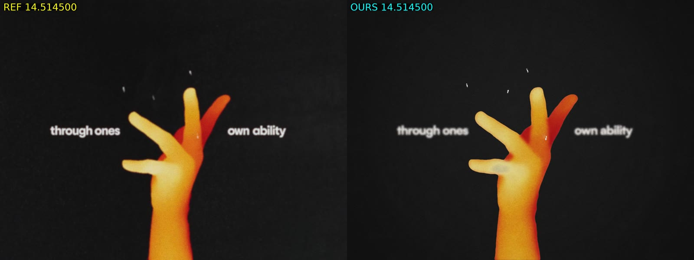

How I made this.
The prompt I used. The instructions I gave next. Then, what Claude did with them.
It started with this.
[local media folder redacted] analyze the mp4 here and use the mp3 as the video. But replicate this video from scratch, make it identical. Got all out on motion effects, transitions, icons, to mimic this video exactly. have a judge of sonnet 5.5 critics at the end analzye so you can iteratively loop until it looks the same.
Original wording, including typos, is preserved. Only the local folder is redacted above. The request says “use the mp3 as the video”; the implementation used it as the soundtrack.
And then I kept directing it.
These are the later human instructions, in order—not a rewritten prompt template. Selected project messages are shown; status checks, local cleanup and other operational messages are omitted. All times are UTC. Notes outside the quotes are editorial.
-
remember to do all work in wsl and create a project and init it to github as well
-
spin up another sonnet general purpose to create a website that hosts via tailscale accessibile the current version with a description etc and the video
-
continually upddate the website with the new versions and also append the old versions in each version change ensure to spin up a sub agent sonnet for that
-
Great when that's done, then create another video showing the two with a side by side comparison. We should do this for every new version too. The website should have each version + the video + the side by side comparison
-
is v1 the og video? Rememebr I want side by side with original and the claude made one
-
Okay nice run thru judge again, continue iterating as this website builds
-
Few things I noticed, the hand is off and the head shape is off, and the grainyness is off.
-
Hmm programmatically compare the face and hand shape it's still not there.
-
ya the hand is really the main thing that's still wrong, it just doesn't look like a hand. Like the ref.
-
No it still looks like a balloon, we should try to trace the shape of the hand in every frame and replicate that.
-
no just trace the actual frames. This is my video
-
This is good! No need to do anymore versions
-
convert all mp4s into web sendable mp4s and lets commit each version with the frames, comparisons, videos, and the original video and mp3 to gh
-
For the final say Claude instead of recreation for the side by side. Have sonnet do that for us while we do this
-
render v16 then commit that and push
-
run sonnet to update tailscale site and run it
-
okay run v17
-
are u having subagents work on v17 now? I thought u would do all the work?
-
okay if it's opus still for implementation, I okay with that
The prompt snapshot ends here, while v17 was still in progress. Its archive checkpoint was v1–v16, not a finished v17. The v18 comparison shown below was archived later.
The work behind those messages.
The following is an editorial summary of recorded tool calls, outputs and checked-in artifacts—not a quotation or the model’s internal reasoning.
- It built a renderer, not a one-shot generated video.
- Claude used
ffprobeto inspect the 2880×2160, 24000/1001 fps source andffmpegto extract contact sheets and stills. After a browser-renderer test failed on a missing library, it used@napi-rs/canvasto draw 14 time-based shots. Node workers and ffmpeg rendered frames, encoded video and added the MP3 soundtrack. - It rendered, asked critics, and revised.
- Three read-only Sonnet critics reviewed the opening, middle and finale against comparison images. Their discrepancy lists drove changes to type, timing, icons, silhouettes and colour, followed by new renders. The version archive keeps those iterations visible; critic scores are not proof of an identical match.
- The human hand feedback changed the method.
- After the request to compare shapes programmatically, Claude wrote silhouette measurements and overlays. When the hand still looked wrong and the user asked it to trace the frames, it added source-derived hand masks and shaded them in code. Later iterations also used traced head masks, pen ink and hand tone maps. “From scratch” did not remain “every shape drawn independently of the source.”
- It turned the iterations into this archive.
- The website work added version history, side-by-side videos, scores and comparison sheets. Early overwritten previews were rebuilt from commits. Following the packaging instruction, web encodes and metadata were committed under
media/. The named “final” export is v14. The session checkpoint covered v1–v16; the comparison below shows the later v18 result.
What that produced
Motion warning: fast cuts and flashing imagery. Playback is opt-in.


Run this repository yourself
These are instructions for the checked-in code, not prompts, a historical command transcript or a guarantee of reproducing the later v18 render. Run them from the repository root in your own checkout.
Just browse the website
A current Node.js LTS release and npm are enough. The committed media needs no model account, ffmpeg, font download or npm dependency install for this route.
npm run site:build
node scripts/serve-site.js 8787 distOpen http://127.0.0.1:8787/site/. To deploy, copy the whole dist/ directory, including dist/media/, to static hosting. Relative links support a hosting subdirectory.
Rebuild the frames
You also need Bash, curl, ffmpeg and ffprobe (with H.264/AAC encoding and the drawtext filter for comparison scripts). Font fetching needs network access. Allow several GB of free disk space and RAM; start with two workers, or one if memory is tight.
Use source media you have permission to process. This demonstration copies the committed web reference and soundtrack into ref/. The reference is re-encoded, not the original full-resolution input, so tracing and measurements may differ. Run in a fresh checkout; these commands replace those local inputs.
npm ci &&
bash scripts/fetch-fonts.sh &&
cp media/original/original.mp4 ref/reference.mp4 &&
cp media/original/original.mp3 ref/audio.mp3 &&
node scripts/trace-hand.js hand &&
node scripts/trace-hand.js head &&
node scripts/trace-ink.js &&
node scripts/trace-pen.js 413 431 pen soft &&
node scripts/trace-pen.js 432 487 &&
node scripts/trace-pen.js 413 431 dark &&
node scripts/trace-pen.js 487 487 darkThe fonts and generated ref/derived/ masks are not bundled. The trace-pen.js commands prepare the later finale’s red pen and dark brush masks. Without these inputs, fallback fonts or drawn shapes can change the result. These tracing scripts are tuned to this reference, not arbitrary videos.
node src/render.js --workers 2 --out out/preview.mp4 &&
ffprobe -v error -select_streams v:0 -count_frames \
-show_entries stream=width,height,nb_read_frames \
-of default=noprint_wrappers=1 out/preview.mp4 &&
bash scripts/sidebyside.sh out/preview.mp4 out/sidebyside.mp4Verify success and a fresh, full-length output. Renders share out/segments/ and reuse filenames: do not run two at once, and archive an accepted version before the next pass.
For an optional full-resolution export with motion blur:
node src/render.js --scale 2 --samples 4 --workers 2 --out out/final.mp4Check one exact frame before changing timing
At this frame rate, zero-based frame 120 is at 120 × 1001 / 24000 = 5.005 s. Extract that source frame and render that time separately, avoiding timestamp-based pairing of two running streams.
node src/render.js --stills 5.005 &&
ffmpeg -v error -y -i ref/reference.mp4 \
-vf "select='eq(n,120)',scale=1440:1080" \
-frames:v 1 out/reference-120.png &&
ffmpeg -v error -y -i out/reference-120.png \
-i out/stills/r_5.005.png -filter_complex hstack \
-frames:v 1 out/pair-120.pngOpen out/pair-120.png. Repeat at cuts and disputed frames. This assumes both timelines start at the same source frame; verify that when adapting the process. A still checks shape and placement, not the whole motion.
About this record
Checked against a read-only snapshot of the project’s Claude Code session through , and the committed v1–v16 archive. Queued human instructions and the answer to Claude’s hand-source question are included; automated notifications and AI-generated conversation summaries are not treated as human prompts.
The displayed video and hand still were added from the later v18 archive, whose metadata identifies render commit fda013a. They match this pinned archive revision byte for byte and are served directly from the project’s v18 media. Integrating the later main-branch archive also brings v17/v18 into the showcase. These artifacts do not extend the prompt snapshot or imply that it contains the v18 instructions.
Private paths, session identifiers, raw transcripts, unrelated conversation and internal reasoning are not published. The code and commands are available to try, but neither bit-for-bit reproduction nor a perfect visual match is promised.
Source repository · Media and version notes · Explore every archived version